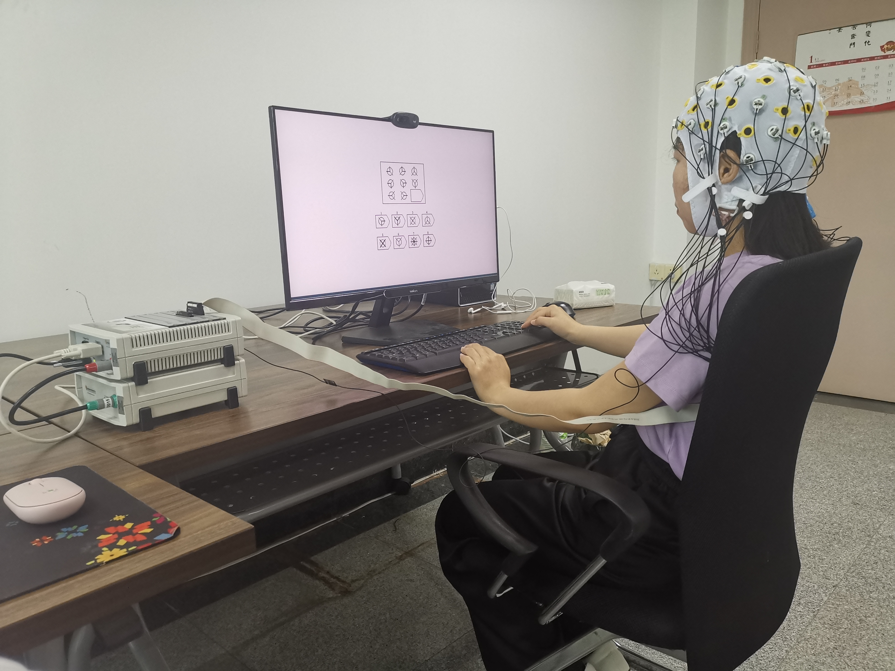

Abstract
One major challenge in appearance-based gaze estimation is the lack of high-quality labeled data.
Establishing databases
or datasets is a way to obtain accurate gaze data and test methods or tools. However, the methods of
collecting data in
existing databases are designed on artificial chasing target tasks or unintentional free-looking
tasks, which are not
natural and real eye interactions and cannot reflect the inner cognitive processes of humans. To
fill this gap, we
propose the first gaze estimation dataset collected from an actual psychological experiment by the
eye tracker, called
the RavenGaze dataset. We design an experiment employing Raven's Matrices as visual stimuli and
collecting gaze data,
facial videos as well as screen content videos simultaneously. Thirty-four participants were
recruited. The results show
that the existing algorithms perform well on our RavenGaze dataset in the 3D and 2D gaze estimation
task, and
demonstrate good generalization ability according to cross-dataset evaluation task. RavenGaze and
the establishment of
the benchmark lay the foundation for other researchers to do further in-depth research and test
their methods or tools.
Click here to know the details about the dataset.
How to use
If you are interested in using this dataset, you will have to print, sign and scan an EULA (End User
License Agreement) and upload it via the dataset request form. We will then supply you with a
username
and password to download the data. Please head on over to the downloads page or click
here for more details.
Credits
First and foremost we'd like to thank the all(34) participants in this study for having the patience
and
goodwill to let us record their data.
This dataset was collected by:
Intelligent Interaction Laboratory @ Northwestern Polytechnical University